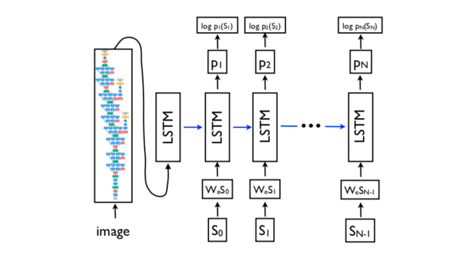

论文 Show and Tell:A Neural Image Caption Generator
代码
地址: https://github.com/nikhilmaram/Show_and_Tell
首先在main.py中创建FLAGS命令行参数
1 | FLAGS = tf.app.flags.FLAGS |
flags的三个参数分别代表：参数名、默认值、描述
创建Config对象，用flags参数初始化config的一些属性
config中包含多个超参数
1 | config = Config() |
创建session
1 | with tf.Session() as asess: |
根据FLAGS.phase，进行训练、评估或测试
训练(FLAGS.phase == ‘train’)
准备训练用的数据集
1 | data = prepare_train_data(config) |
prepare_train_data()是dataset.py中的方法
通过COCOAPI进行初始化
1 | # 传入captions_train2014.json文件的路径，返回 |
其中coco.filter_by_cap_len()并非COCOAPI中的方法；coco.filter_by_cap_len()根据图片描述的文字长度过滤数据：如果长度大于max_cap_len，则不会将其加入训练数据集中
1 | def filter_by_cap_len(self, max_cap_len): |
1 | def createIndex(self): |
创建词汇表vocabulary
1 | vocabulary = Vocabulary(config.vocabulary_size) |
如果相应目录中存在文件，则会载入词汇表；如果不存在，则会重新创建词汇表并保存为文件：
1 | def build(self, sentences): |
如果存在vocabulary文件则加载
1 | def load(self, save_file): |
根据词汇表进行过滤
1 | coco.filter_by_words(set(vocabulary.words)) |
coco.filter_by_words()会根据上一步获取的vocabulary，将存在不在词汇表中的单词的标注所在的样本去除。
1 | def filter_by_words(self, vocab): |
保存过滤后的annotations
1 | # 保存coco中的标注、id、图像到文件temp_annotation_file中 |
如果存在相应的文件则读取；否则根据captions,image_ids,image_files创建annotations并保存为文件
保存过滤后的data
1 | # 保存单词索引和masks到文件temp_data_file中 |
返回dataset
1 | dataset = DataSet(image_ids, image_files, config.batch_size, word_idxs |
建立训练模型
1 | model = CaptionGenerator(config) |
首先实例化父类BaseModel
1 | def __init__(self, config): |
在nn.py中，NN会初始化 TODO
| ID | Variable | |
|---|---|---|
| 1 | conv_kernel_initializar | |
| 2 | conv_kernel_regularizer | |
| 3 | conv_activity_regularizer | |
| 4 | fc_kernel_initializar | |
| 5 | fc_kernel_regularizer | |
| 6 | fc_activity_regularizer |
1 | class NN(object): |
在model.py中，会根据config中的配置加载CNN( vgg16或resnet50 )模型和RNN模型；如果需要进行训练，还会建立optimizer和summary。summary用于通过TensorBoard实现可视化
1 | def build(self): |
vgg16
根据vgg16的结构编码
rnn
1 | # TODO |
载入模型
1 | if FLAGS.load: |
todo
完成计算图的构建
1 | tf.get_default_graph().finalize() |
进行训练
1 | model.train(sess, data) |
评估(FLAGS.phase == ‘eval’)
初始化coco, data和vocabulary
1 | coco, data, vocabulary = prepare_eval_data(config) |
通过dataset.py中的prepare_eval_data()进行初始化
通过COCOAPI进行初始化
1 | coco = COCO(config.eval_caption_file) |
创建数据集
1 | # 图像索引和图像文件 |
初始化model并载入
1 | model = CaptionGenerator(config) |
构建计算图并进行评估
1 | tf.get_default_graph().finalize() |
eval(self, sess, eval_gt_coco, eval_data, vocabulary)
测试(FLAGS.phase == ‘test’)
初始化coco, data和vocabulary
1 | data, vocabulary = prepare_test_data(config) |
创建数据集
1 | # 通过路径files创建图像索引和图像文件 |
初始化model并载入
1 | model = CaptionGenerator(config) |
构建计算图并进行测试
1 | tf.get_default_graph().finalize() |
论文
Encoder-Decoder结构: 在机器翻译中，将原单词序列 通过Encoder部分“编码”为一个向量表示，再利用Decoder部分对此向量进行"解码"，输出目标单词序列 。
本论文的方法是，将原来Encoder-Decoder结构中的Encoder部分替换成CNN，利用在图像中常用的CNN来提取图像的特征，再通过Decoder解码生成标注。结构如下图所示：

模型分为以下2个部分
-
Image embedder：也就是encoder部分，通过CNN，将图片 $$I$$ 编码为一个长度固定为 的向量：
-
Word embedding：
首先在每一个标注的前后分别加上start和end标签（也就是上图中的 ，这两个标签也会作为标注中的内容）。假设语料库中共有 个单词，对语料中所有的单词进行one-hot编码，这个每个句子都可以表示为一个 维向量；然后对这个m维向量进行矩阵变换成为一个 维向量（与图片向量的大小相同）：
上式的 可以通过学习得到。 。
最后通过LSTM输出结果，这就是decoder部分：
LSTM后会跟随一个Softmax分类器，分类数量等于词汇数量。
最后可以得到损失函数：
因此，如果模型的参数为 ，对于一张(训练集中的)图片 ，其正确的描述为序列 ，那么我们要通过训练最大化概率 ，也就是最大化对给定图片生成正确描述的概率，用以下公式表示：
由于 可以表示任何句子，而句子的长度是无限制的，因此常用链规则来描述在 上的联合概率，其中 是特定样本的长度：
为了方便，上式移除了对 的依赖性。
模型的损失函数是每一步中正确单词的negative log likelihood的总和：
因为RNN会出现梯度消失和爆炸(vanishing and exploding gradients)，所以使用RNN的改进版LSTM。LSTM的主要结构为：
LSTM通过输入门、遗忘门和输出门来实现信息的控制
遗忘门：该门决定丢弃信息的多少，会读取 ，给每个在细胞状态 的数字输出一个0到1的数值，表示对信息的保留程度：
其中 h_{t−1} 表示的是上一个cell的输出， 表示的是当前细胞的输入， 表示sigmod函数。
输入门：该门决定新信息的加入量。首先，由一个sigmoid层决定哪些信息需要更新；由一个tanh层生成一个向量，也就是备选的用来更新的内容 。在下一步，我们把这两部分联合起来，对cell的状态进行一个更新。最后把旧状态与 相乘，丢弃掉需要丢弃的信息，再加上 ，这就是新的候选值：
i_t=\sigma(W_i·[h_{t-1},x_t]+b_i) \\ \tilde{C_t}=\tanh(W_C·[h_{t-1},x_t]+b_C) \\ C_t=f_t*C_{t-1}+i_t*\tilde{C_t}
输出门：该门决定输出的值。首先，通过一个sigmoid层来确定细胞状态的哪个部分将输出出去。接着，我们把细胞状态通过 tanh 进行处理（得到一个在 -1 到 1 之间的值）并将它和 sigmoid 门的输出相乘，最终我们仅仅会输出我们确定输出的那部分：
o_t=\sigma(W_o·[h_{t-1},x_t]+b_o) \\ h_t=o_t*\tanh(C_t)